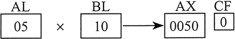
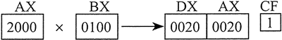
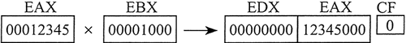

首页 > 编程笔记
汇编语言MUL指令：无符号数乘法
32 位模式下，MUL（无符号数乘法）指令有三种类型：
乘数和被乘数的大小必须保持一致，乘积的大小则是它们的一倍。这三种类型都可以使用寄存器和内存操作数，但不能使用立即数：
如果乘积的高半部分不为零，则 MUL 会把进位标志位和溢出标志位置 1。因为进位标志位常常用于无符号数的算术运算，在此我们也主要说明这种情况。例如，当 AX 乘以一个 16 位操作数时，乘积存放在 DX 和 AX 寄存器对中。其中，乘积的高 16 位存放在 DX，低 16 位存放在 AX。如果 DX 不等于零，则进位标志位置 1，这就意味着隐含的目的操作数的低半部分容纳不了整个乘积。
有个很好的理由要求在执行 MUL 后检查进位标志位，即，确认忽略乘积的高半部分是否安全。
下述语句实现 16 位值 2000h 乘以 0100h。由于乘积的高半部分（存放于 DX）不等于零，因此进位标志位被置 1：
下述语句实现 12345h 乘以 1000h，产生的 64 位乘积存放在 EDX 和 EAX 寄存器对中。EDX 中存放的乘积高半部分为零，因此进位标志位被清除：
- 第一种执行 8 位操作数与 AL 寄存器的乘法；
- 第二种执行 16 位操作数与 AX 寄存器的乘法；
- 第三种执行 32 位操作数与 EAX 寄存器的乘法。
乘数和被乘数的大小必须保持一致，乘积的大小则是它们的一倍。这三种类型都可以使用寄存器和内存操作数，但不能使用立即数：
MUL reg/mem8
MUL reg/meml6
MUL reg/mem32
| 被乘数 | 乘数 | 乘积 |
|---|---|---|
| AL | reg/mem8 | AX |
| AX | reg/mem16 | DX:AX |
| EAX | reg/mem32 | EDX:EAX |
如果乘积的高半部分不为零，则 MUL 会把进位标志位和溢出标志位置 1。因为进位标志位常常用于无符号数的算术运算，在此我们也主要说明这种情况。例如，当 AX 乘以一个 16 位操作数时，乘积存放在 DX 和 AX 寄存器对中。其中，乘积的高 16 位存放在 DX，低 16 位存放在 AX。如果 DX 不等于零，则进位标志位置 1，这就意味着隐含的目的操作数的低半部分容纳不了整个乘积。
有个很好的理由要求在执行 MUL 后检查进位标志位，即，确认忽略乘积的高半部分是否安全。
MUL 示例
下述语句实现 AL 乘以 BL，乘积存放在 AX 中。由于 AH（乘积的高半部分）等于零，因此进位标志位被清除（CF=0）：
mov al, 5h
mov bl, 10h
mul bl ; AX = 0050h, CF = 0

下述语句实现 16 位值 2000h 乘以 0100h。由于乘积的高半部分（存放于 DX）不等于零，因此进位标志位被置 1：
.data val1 WORD 2000h val2 WORD 0l00h .code mov ax, val1 ; AX = 2000h mul val2 ; DX:AX = 00200000h, CF = 1

下述语句实现 12345h 乘以 1000h，产生的 64 位乘积存放在 EDX 和 EAX 寄存器对中。EDX 中存放的乘积高半部分为零，因此进位标志位被清除：
mov eax, 12345h
mov ebx, 1000h
mul ebx ; EDX:EAX = 0000000012345000h, CF = 0

在 64 位模式下使用 MUL
64 位模式下，MUL 指令可以使用 64 位操作数。一个 64 位寄存器或内存操作数与 RAX 相乘，产生的 128 位乘积存放到 RDX:RAX 寄存器中。下例中，RAX 乘以 2，就是将 RAX 中的每一位都左移一位。RAX 的最高位溢出到 RDX 寄存器，使得 RDX 的值为 0000 0000 0000 0001h：
mov rax, 0FFFF0000FFFF0000h
mov rbx, 2
mul rbx ; RDX:RAX = 0000000000000001FFFE0001FFFE0000
.data multiplier QWORD 10h .code mov rax, OAABBBBCCCCDDDDh mul multiplier ; RDX:RAX = 00000000000000000AABBBBCCCCDDDDOh
关注公众号「站长严长生」，在手机上阅读所有教程，随时随地都能学习。内含一款搜索神器，免费下载全网书籍和视频。

微信扫码关注公众号